香橙派5B上手记录
本文基于香橙派官方文档, 结合自己上手记录过程
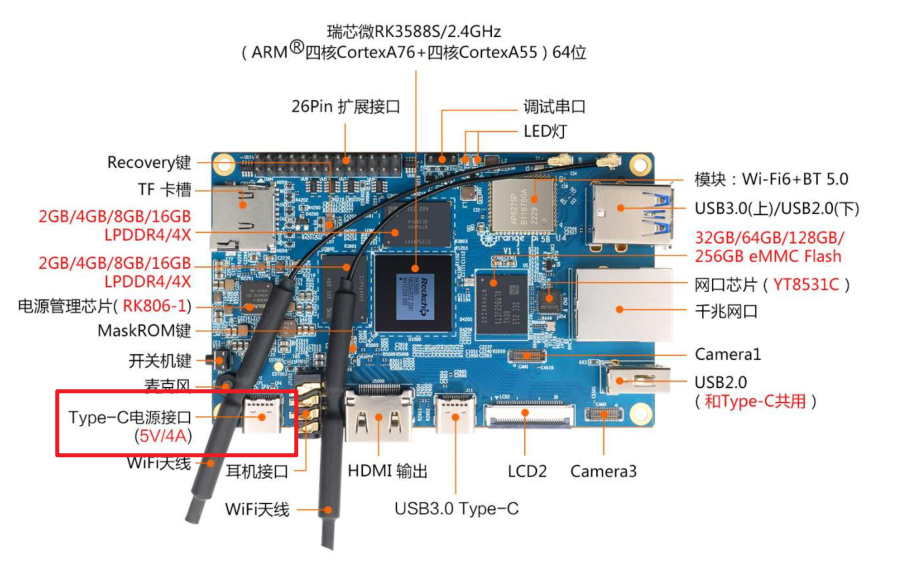
前置工作
- 开发板
- 5V/4A/20W 电源 (手册中多次提及电压不能超过5V, 否则会烧坏板子)
- 3.3V 的 USB 转 TTL 模块和杜邦线, 使用串口调试功能时, 需要 USB 转 TTL 模块和杜邦线来连接开发板和电脑
- 上一条可以换成网线
- 读卡器 + TF卡 (对于香橙派5, 板载emmc自带 Droid 系统)
- Ubuntu镜像文件 + 烧录软件 balenaEtcher
balenaEtcher官方地址 https://www.balena.io/etcher/
Ubuntu 系统启动
前置烧录
烧录至 TF 卡
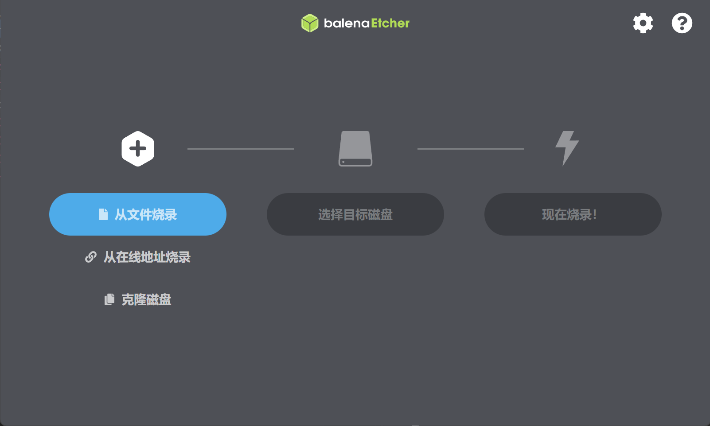
使用 TF 卡烧录至 emmc
ls /dev/mmcblk*boot0 | cut -c1-12
#格式化
sudo dd bs=1M if=/dev/zero of=/dev/mmcblk1 count=1000 status=progress
sudo sync
#烧录
sudo dd bs=1M if=<镜像路径/镜像名> of=/dev/mmcblk1 status=progress
sudo sync
#实例
sudo dd bs=1M if=Orangepi5b_1.0.8_ubuntu_focal_server_linux5.10.160.img of=/dev/mmcblk1 status=progress
sudo sync使用 RKDevTool 烧录至 emmc
-
准备工具
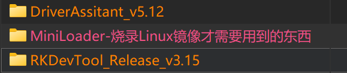
注意，"MiniLoader-烧录 Linux 镜像才需要用到的东西"文件夹下文简称为 MiniLoader 文件夹。
-
在文件夹 DriverAssitant_v5.12 中找到 DriverInstall.exe 可执行文件并打开即可
-
打开 DriverInstall.exe 后安装瑞芯微驱动的步骤如下所示:
-
点击“驱动安装”按钮
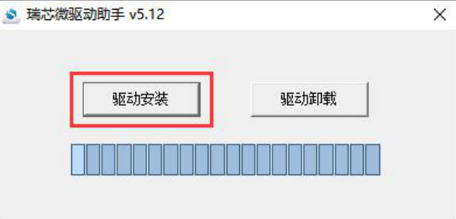
-
等待一段时间后，会弹出窗口提示“安装驱动成功”，然后点击“确定”按钮即可
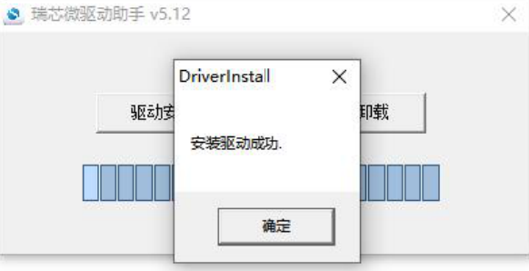
-
-
在 RKDevTool_Release 中打开 RKDevTool
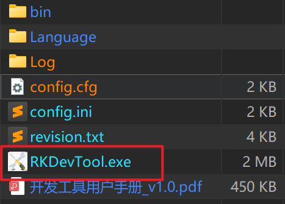
-
打开 RKDevTool 烧录工具后，因为电脑此时还没有通过 Type-C 线连接上开发板，所以左下角会提示"没有发现设备"
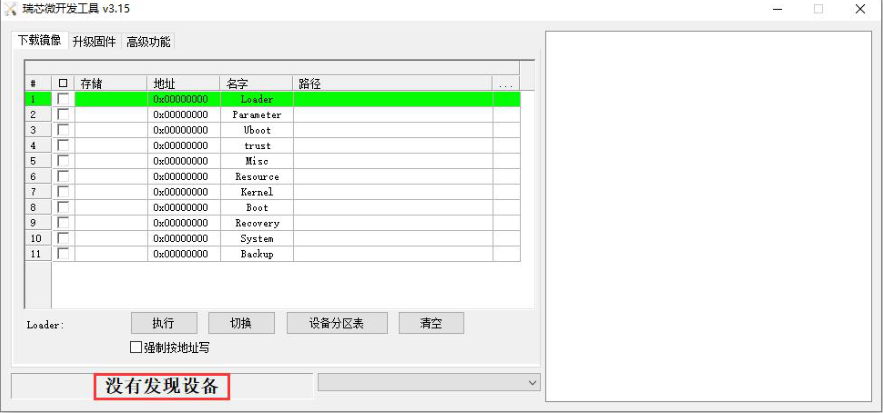
-
然后开始烧录 Linux 镜像到 eMMC 中
-
首先通过 Type-C 数据线连接好开发板与 Windows 电脑
-
确保开发板没有插入 TF 卡，没有连接电源
-
还需确保下图位置的白色 USB2.0 接口没有插入 USB 设备
-
然后按住开发板的 MaskROM 按键不放，MaskROM 按键在开发板的位置如下图所示：
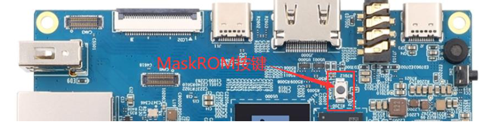
-
然后给开发板接上 Type-C 接口的电源，并上电，然后就可以松开 MaskROM 按键了
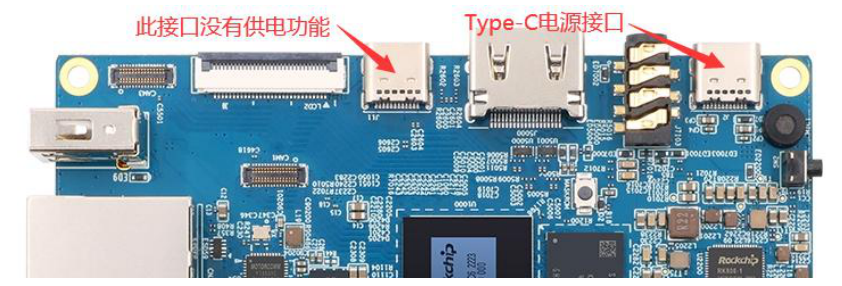
-
如果前面的步骤顺利，此时开发板会进入 MASKROM 模式，在烧录工具的界面上会提示"发现一个 MASKROM 设备"
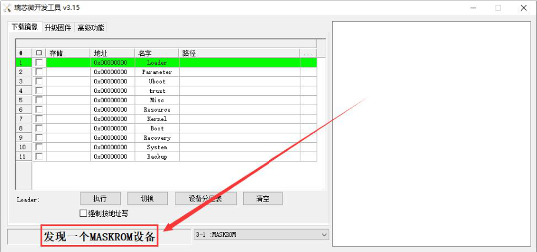
-
然后将鼠标光标放在下面的这片区域中
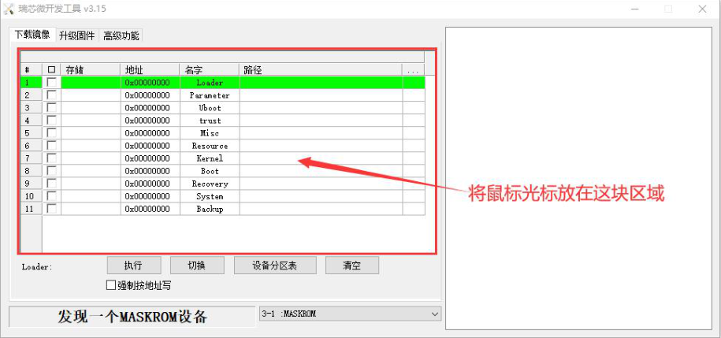
-
然后点击鼠标右键会弹出下图所示的选择界面
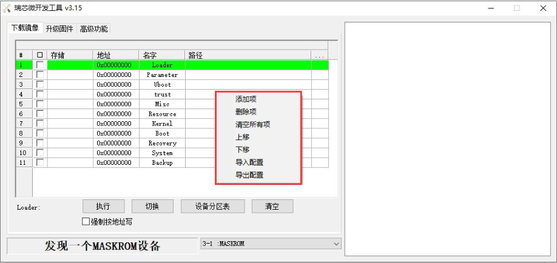
-
然后选择导入配置选项
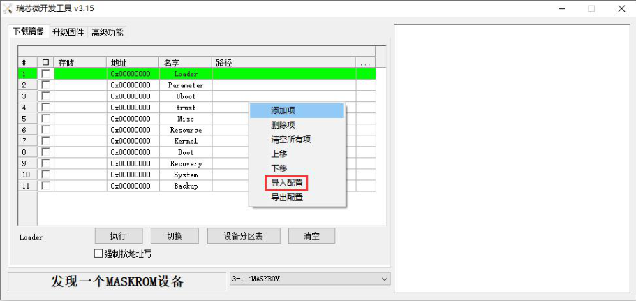
-
然后选择前面下载的 MiniLoader 文件夹中的 rk3588_linux_emmc.cfg 配置文件，再点击打开
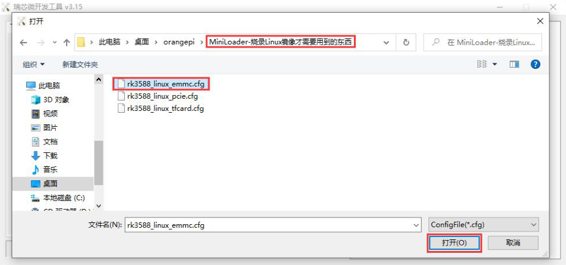
-
然后点击确定
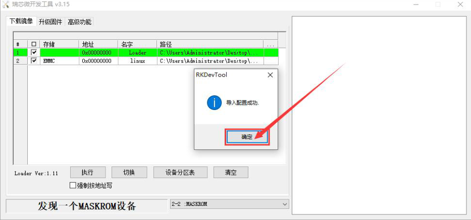
-
然后点击下图所示的位置
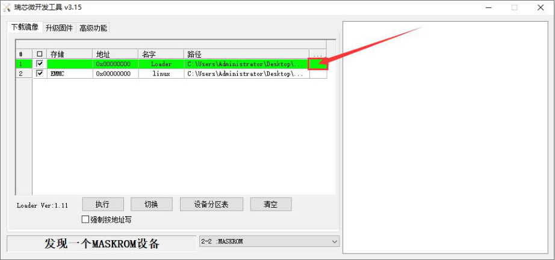
-
再选择前面下载的 MiniLoader 文件夹中 MiniLoaderAll.bin，再点击打开
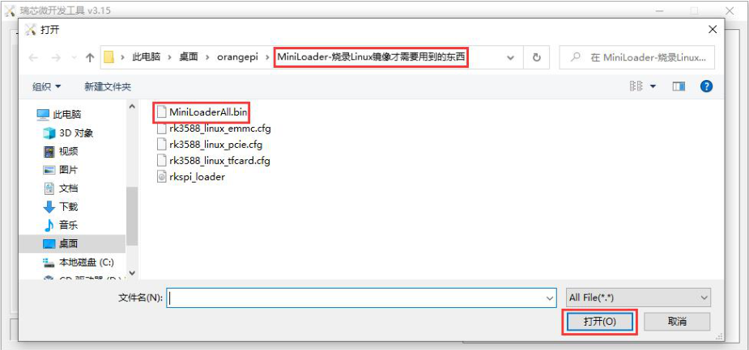
-
然后点击下图所示的位置
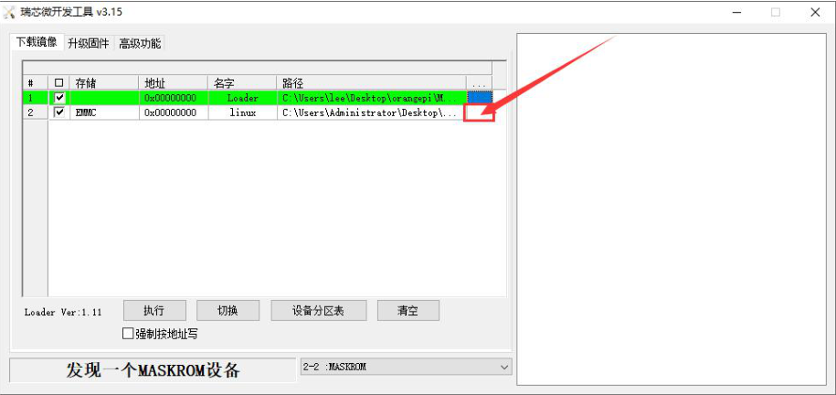
-
然后选择想要烧录的 linux 镜像的路径，再点击打开
在烧录镜像前，建议将要烧录的linux镜像重命名为orangepi.img或者其它比较短的名字，这样在烧录镜像的时候就能看到烧录进度的百分比数值。
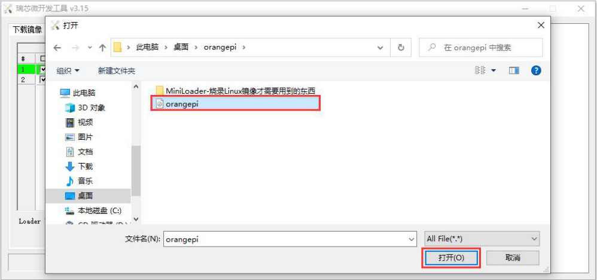
-
然后请勾选上强制按地址写选项
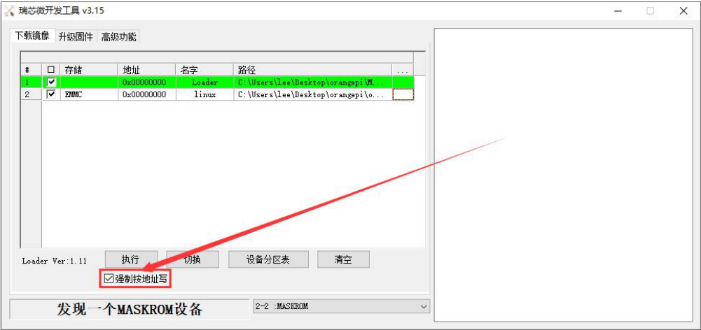
-
再点击执行按钮就会开始烧录 linux 镜像到开发板的 eMMC 中
-
linux 镜像烧录完后的显示 log 如下图所示
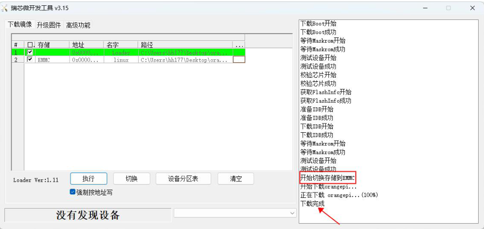
-
烧录完 linux 镜像到 eMMC 中后，linux 系统会自动启动。
-
Linux 启动并登录
此处我烧录的是 Ubuntu Server, 因此提前准备了一根网线
-
连接网线, 电源并启动
-
登录 192.168.1.1 查看香橙派网络
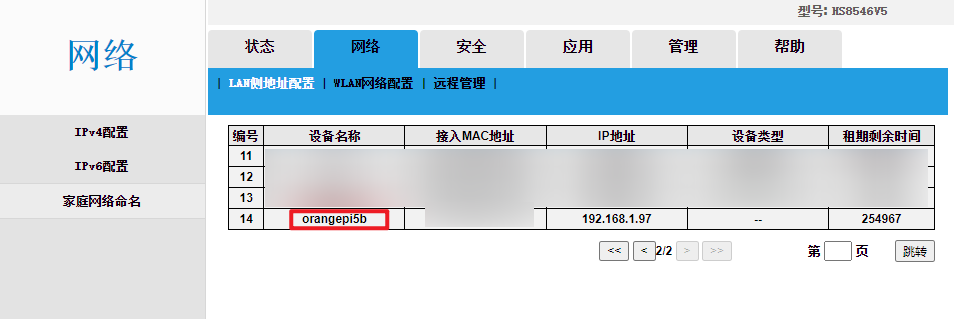
-
使用 ssh 工具连接香橙派
账号及密码都是 (orangepi)
串口调试
- RX (Receive Data) 接收数据
- TX (Transmit Data) 发送数据
- 首先查看自己手上的模块的引脚对应关系
- 开发板的调试串口引脚关系对应如下
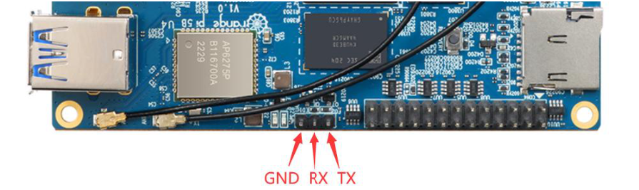
-
USB 转 TTL 模块 GND、TXD 和 RXD 引脚需要通过杜邦线连接到开发板的调试串口上
- USB 转 TTL 模块的 GND 接到开发板的 GND 上
- USB 转 TTL 模块的 RX 接到开发板的 TX 上
- USB 转 TTL 模块的 TX 接到开发板的 RX 上
-
由此杜邦线接线的顺序应该(紫、青、蓝)
-
调整终端工具参数
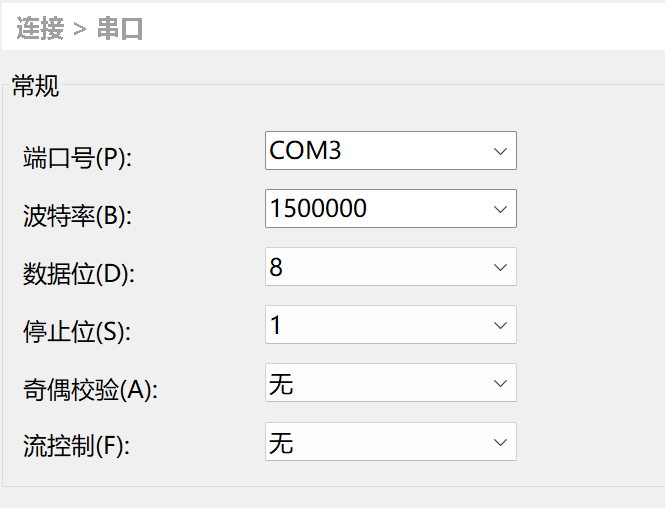
- 开机
WIFI 连接
- 首先使用
nmcli dev wifi命令扫描周围的 WIFI 热点
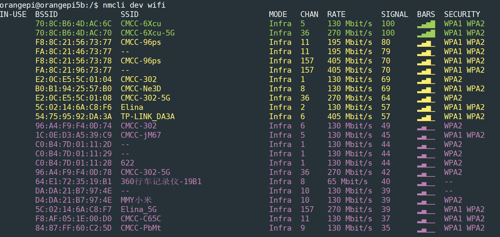
- 然后使用
nmcli命令连接扫描到的 WIFI 热点：
nmcli dev wifi connect <wifi_name> password <wifi_passwd>
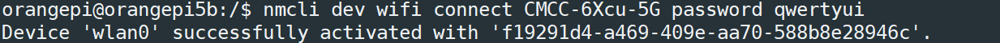
- 通过
ip addr show wlan0命令可以查看 wifi 的 IP 地址
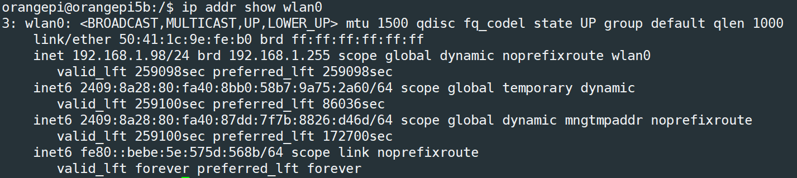
- 使用
ping命令可以测试 wifi 网络的连通性

设置静态 IP 地址
使用 nmcli 命令设置
如果要设置网口的静态 IP 地址，请先将网线插入开发板，如果需要设置 WIFI的静态 IP 地址，请先连接好 WIFI，然后再开始设置静态 IP 地址
- 然后通过
nmcli con show命令可以查看网络设备的名字，如下所示
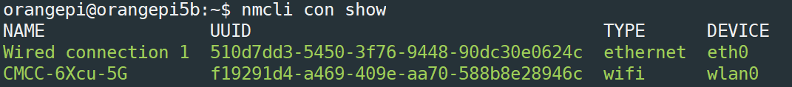
-
然后输入下面的命令
nmcli con mod "<网络名>" \ ipv4.addresses "192.168.1.110" \ ipv4.gateway "192.168.1.1" \ ipv4.dns "8.8.8.8" \ ipv4.method "manual" nmcli con mod "CMCC-6Xcu-5G" \ ipv4.addresses "192.168.1.111" \ ipv4.gateway "192.168.1.1" \ ipv4.dns "8.8.8.8" \ ipv4.method "manual" # Wired connection 1 表示设置以太网的静态 IP 地址 # ipv4.addresses 后面是要设置的静态 IP 地址，可以修改为自己想要设置的值 # ipv4.gateway 表示网关的地址 -
然后重启 linux 系统
sudo reboot -
然后重新进入 linux 系统使用
ip addr show eth0命令就可以查看到 IP 地址已经设置为想要的值了 (如果设置成功后通过 ssh登录就能发现了🤣)
使用 nmtui 命令设置
- 首先运行
nmtui命令
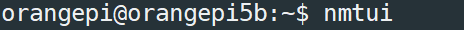
- 选择 Edit a connection, 并按下回车
- 选择需要设置静态 IP 地址的网络接口, 比如设置 CMCC-6Xcu-5G, 按下 Tab 键进入
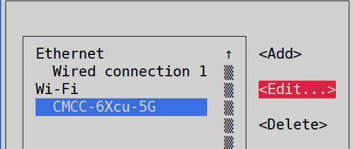
- 将光标移动到下图所示的
<Automatic>位置进行 IPv4 的配置
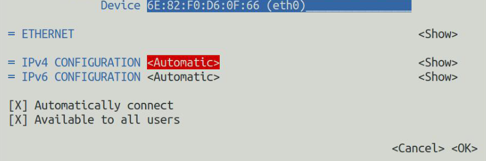
- 然后回车, 通过方向键选择
Manual, 然后回车确定
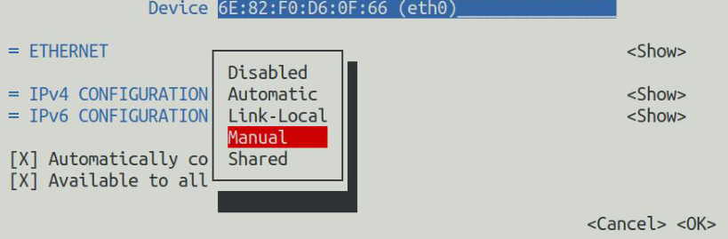
- 然后通过 Tab 键将光标移动到
<Show>
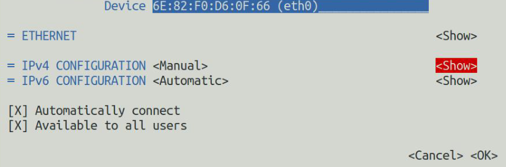
- 在下图所示的位置设置 IP 地址(Addresses)、网关(Gateway)和 DNS 服务器的地址（里面还有很多其他设置选项，请自行探索），请根据自己的具体需求来设置，下图中设置的值只是一个示例
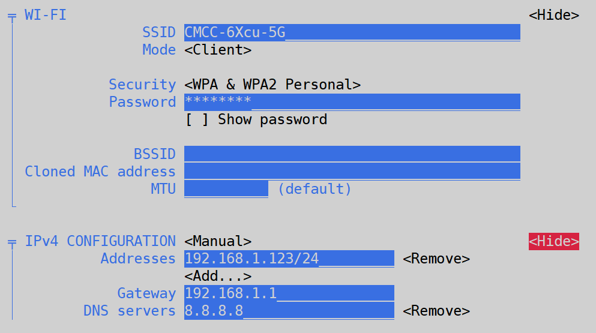
- 完后将光标移动到右下角的
<OK>，然后回车确认, 然后点击<Back>回退到上一级选择界面 - 然后选择 Activate a connection，再将光标移动到
<OK>，最后点击回车
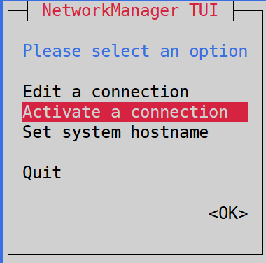
- 然后选择需要设置的网络接口，激活该激活的, 关闭想关闭的网络
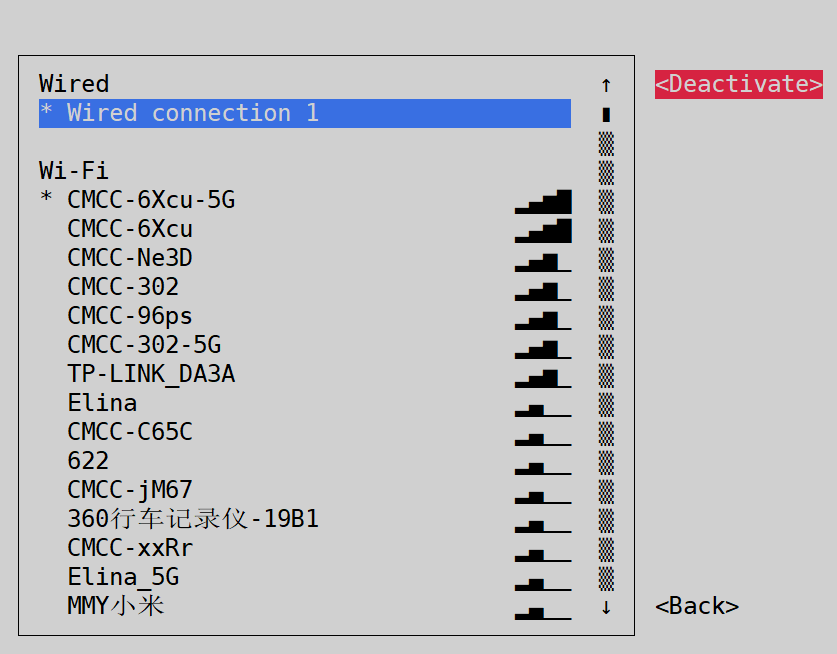
- 设置完成, 友好退出即可
- 最后通过
ip addr show wlan0就能看到网口的 IP 地址已经变成前面设置的静态 IP地址了
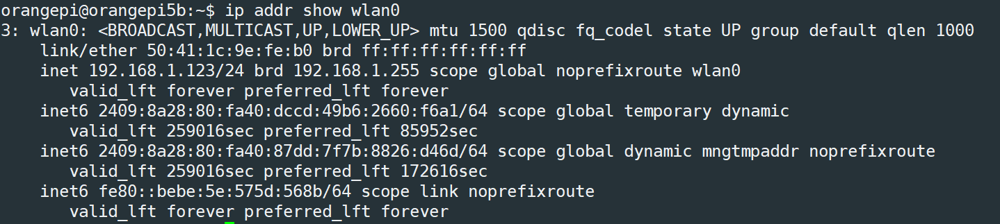
板载 LED 灯说明
- 开发板上有两个 LED 灯，一个绿灯，一个红灯，所在位置如下图所示：
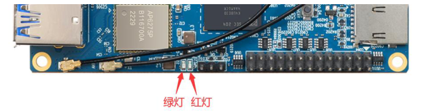
-
只要开发板打开了电源，红色的 LED 灯就会常亮，这是由硬件控制的，软件无法关闭。
-
绿色的 LED 灯在内核启动后会一直闪烁，这是由软件控制的
-
设置绿灯亮灭和闪烁的方法如下所示
注意: 下面的操作请在 root 用户下进行
-
首先进入绿灯的设置目录
cd /sys/class/leds/status_led -
设置绿灯停止闪烁的命令如下
echo none > trigger -
设置绿灯常亮的命令如下
echo default-on > trigger -
设置绿灯闪烁的命令如下
echo heartbeat > trigger -
如果开机后不需要 LED 灯闪烁, 可以使用下面的方法来关闭绿灯和蓝灯
-
首先运行下 orangepi-config，普通用户记得加 sudo 权限
sudo orangepi-config -
然后选择 System
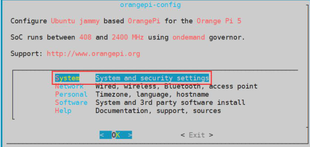
-
然后选择 Hardware
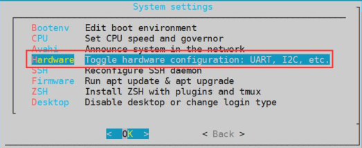
-
然后使用键盘的方向键定位到下图所示的位置，再使用空格选中 disable-led 配置
-
然后选择
<Save>保存, 然后选择<Back>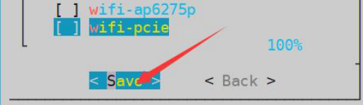
-
然后选择
<Reboot>重启系统使配置生效, 重启后就可以看到开发板上只有红灯常亮, 绿灯不会闪烁了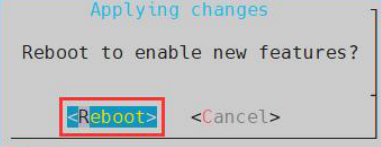
-
-
常用命令
查看 Ubuntu 版本
lsb_release -a
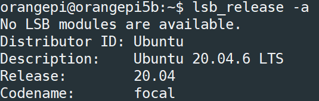
查看系统架构
uname -m
scp
scp [参数] <源地址（用户名@IP地址或主机名）>:<文件路径> <目的地址（用户名 @IP 地址或主机名）>:<文件路径>
####举例
scp ./init.sh dee@192.168.1.99:/home/dee/ #把本地的init.sh文件拷贝到192.168.1.99的/home/dee目录下
scp orangepi@192.168.1.111:/etc/apt/sources.list ./ #把192.168.1.111的sources.list文件拷贝到本地当前目录下
scp -r /home/work/sourcedir work@192.168.0.10:/home/work/ #拷贝文件夹，加-r参数磁盘挂载
sudo mkdir /home/data
sudo mount /dev/sda1 /home/data #挂载
sudo umount /dev/sda1 #卸载
fuser -m /dev/sda1 #查看正在使用磁盘的应用
sudo fdisk -l #查看所有磁盘信息(包括未挂载的)账户相关
#修改 root 账号的密码(要切换至root)
paswd
#修改 orangepi 账号的密码
passwd orangepi
#修改 orangepi 的账号为 dee
usermod -l dee orangepi
#修改组
groupmod -n dee orangepi
#把原来 orangepi 目录改掉
mv /home/ornagepi /home/dee
#把这目录设置成 orangepi 用户的 home 目录
usermod -d /home/orangepi orangepi
#查看 Linux 中所有用户
cat /etc/passwd
#查看 Linux 中添加了多少用户
cat /etc/passwd|grep -v nologin|grep -v halt|grep -v shutdown|awk-F":" '{ print $1"|"$3"|"$4 }'|more
#查看 Linux 中所有组
cat /etc/group
#删除 Linux 某个用户
userdel <用户名>
#删除linux中某个用户所有信息
userdel -r <用户名>设置时区
sudo dpkg-reconfigure tzdata 选择Asia然后shanghai即可
常用 apt 命令
# 查看当前Ubuntu系统使用的镜像源
cat /etc/apt/sources.list
如果想使用其他镜像源，可以在这个文件中添加或编辑相应的行。编辑完成后，记得运行以下命令更新软件包列表：
sudo apt update
# 这是一个主要在新系统安装之后或安装新软件包之前调用的命令。apt update 命令更新 Linux 系统的包索引或包列表。它不会升级任何软件包，正如一些 Linux 用户被误导的那样。
sudo apt upgrade
# 需要将您的软件包升级到最新版本？然后apt upgrade是要执行的命令。apt upgrade 命令不带任何参数，将系统上所有过时的软件包升级到最新版本。
# 如果需要任何依赖项，该命令还会触发新软件包的安装。除此之外，apt upgrade还会安装您系统所需的所有安全更新，这加强了您系统的安全性。
apt list --upgradable #列出需要升级的软件包
####
sudo apt update #列出所有可更新的软件清单命令
sudo apt install <package_name> #安装指定的软件命令
sudo apt install <package_1> <package_2> <package_3> #安装多个软件包
sudo apt update <package_name> #更新指定的软件命令
sudo apt remove <package_name> #删除软件包命令
sudo apt autoremove #清理不再使用的依赖和库文件
sudo apt purge <package_name> #移除软件包及配置文件
sudo apt search <keyword> #查找软件包命令
apt list --installed #列出所有已安装的包
apt list --all-versions #列出所有已安装的包的版本信息常用防火墙命令
sudo apt install ufw #安装防火墙
sudo ufw status #查看防火墙状态
sudo ufw enable #开启防火墙
sudo ufw disable #关闭防火墙
sudo ufw allow 80 #允许外部访问80端口, 协议包含 tcp 和 udp
sudo ufw allow 80/tcp #允许其它主机使用 tcp 协议访问本机 80 端口
sudo ufw delete allow 80 #禁止外部访问80 端口
sudo ufw allow from 192.168.1.1 #允许此IP访问所有的本机端口
sudo ufw deny smtp #禁止外部访问smtp服务
sudo ufw reject out smtp #禁止访问外部smtp端口，不告知“被防火墙阻止”
sudo ufw deny out to 192.168.1.1 #禁止本机 192.168.1.1 对外访问，告知“被防火墙阻止”
sudo ufw delete allow smtp #删除上面建立的某条规则
sudo ufw delete deny 80/tcp #要删除规则，只要在命令中加入delete就行了
###可以允许所有RFC1918网络（局域网/无线局域网的）访问这个主机（/8,/16,/12是一种网络分级）
sudo ufw allow from 10.0.0.0/8
sudo ufw allow from 172.16.0.0/12
sudo ufw allow from 192.168.0.0/16常用端口命令
sudo netstat -ntulp|grep <应用名> #注意要加sudo
sudo lsof -i:<端口号> #注意要加sudo软件及服务
JDK
安装 OpenJDK 8
sudo apt update
sudo apt install openjdk-8-jdk -y通过检查 Java 版本，来验证安装过程：
java -version
##### 控制台 ####
openjdk version "1.8.0_382"
OpenJDK Runtime Environment (build 1.8.0_382-8u382-ga-1~20.04.1-b05)
OpenJDK 64-Bit Server VM (build 25.382-b05, mixed mode)安装OpenJDK 11
sudo apt install openjdk-11-jdk -y
##### 控制台 ####
openjdk version "11.0.20.1" 2023-08-24
OpenJDK Runtime Environment (build 11.0.20.1+1-post-Ubuntu-0ubuntu120.04)
OpenJDK 64-Bit Server VM (build 11.0.20.1+1-post-Ubuntu-0ubuntu120.04, mixed mode)设置默认版本
sudo update-alternatives --config java #同时也可查看 Java 安装路径JAVA_HOME 环境变量
java 安装路径如下:
- OpenJDK 11 is located at
/usr/lib/jvm/java-11-openjdk-amd64/bin/java - OpenJDK 8 is located at
/usr/lib/jvm/java-8-openjdk-amd64/jre/bin/java
#环境变量位置
sudo vim /etc/environment
#末尾添加
JAVA_HOME="/usr/lib/jvm/java-8-openjdk-arm64/jre/bin/java"
#立即生效
source /etc/environment
#校验
echo $JAVA_HOMEsudo apt remove openjdk-11-jdkMySql
#查看
sudo apt search mysql
#安装
sudo apt install mysql-server -y
#查看服务
sudo systemctl status mysql
#查看版本
mysql --version安全配置向导说明
sudo mysql_secure_installation配置远程访问
#允许远程访问
cd /etc/mysql/mysql.conf.d
sudo vim mysqld.cnf #此处不要修改权限, 否则 mysql 无法读取配置
# 重启mysql
sudo systemctl restart mysql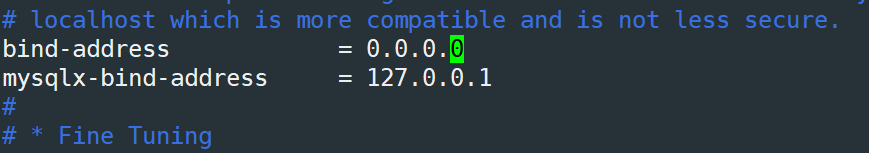
登录
#登录
sudo mysql
sudo mysql -uroot -p #接着输入密码
#更改 root 密码
ALTER USER 'root'@'localhost' IDENTIFIED WITH mysql_native_password BY 'sad_mysql';
#### 推荐新建用户 (通过 SELECT @@VERSION; 查看版本: mysql版本8.0.13之后, 新用户授权方式发生了变化
create user 'saddyfire'@'%' identified by 'sad_mysql';
grant all privileges on *.* to 'saddyfire'@'%' with grant option;
flush privileges;
#### 如果出现了策略 ERROR 1819 (HY000): Your password does not satisfy the current policy requirements
show variables like 'validate_password%';
set global validate_password.policy=LOW;
set global validate_password.length=6;
flush privileges;卸载
#查看MySQL的依赖项
dpkg --list|grep mysql
#删除
sudo apt remove mysql-*
#继续查看
dpkg --list|grep mysql
#继续删除
sudo apt autoremove --purge mysql-server-8.0 mysql-commonRedis
sudo apt install redis-server -y配置文件及日志
cd /etc/redis
sudo vim /etc/redis/redis.conf
#(定位到 bind 端口绑定) >>> 注释# bind 127.0.0.1 ::1
#(定位到 requirepass 并修改密码)
#查看日志
cd /var/log/redis
#中间会遇到文件夹及文件权限问题
chmod 755 *Nginx
sudo apt install nginx-full -y配置文件及日志
#配置文件夹
cd /etc/nginx
#日志
cd /var/log/nginx/
#中间会遇到文件夹及文件权限问题
chmod 755 *局域网共享
安装及配置
#安装Samba
sudo apt install samba -y
#新增共享目录
sudo mkdir -p /dee/sharedata
#添加用户
sudo useradd dee -s /usr/sbin/nologin
#修改权限
sudo chown dee:dee /dee/sharedata
#将用户smbuser添加到samba的smbpasswd file中(即在samba服务中注册该账户)
sudo smbpasswd -a dee
#pass=dee配置文件
cd /etc/samba/
sudo vim /etc/samba/smb.confshift g 在末尾添加
## 注意: 后面的注释要输出
[secret] #共享目录名，访问时的展示名
comment = Secret File #该共享目录的描述
path = /dee/sharedir #访问的实际路径,前面设置的
valid users = dee #设置可访问的用户，此处为前面添加的用户smbuser（注意users不要拼写错误）
guest ok = no #是否允许访客，否
writable = yes #可写，是
browsable = yes #可浏览，是重启生效
sudo systemctl restart smbd
sudo systemctl restart nmbd匿名方式类似
# 打开文件
sudo vim /etc/samba/smb.conf
# 尾部写入以下内容并保存
[share]
comment = Ubuntu File Server
path = /dee/shareAll
browsable = yes
guest ok = yes
read only = no附加命令
# 查看samba用户列表
sudo pdbedit -L
#删除samba服务中的某个用户
sudo smbpasswd -x<用户名>
# 对samba用户进行管理（用户已经在系统中创建）
sudo smbpasswd -h #查看支持的命令列表
# 异常时可查看日志情况
cat /var/log/samba/log.%m自动化部署
wifi
vim inti-wifi.sh
#! /bin/bash
## 如果出现 -bash: /bin/bash^M: bad interpreter: No such file or directory
## vim或者vi的命令模式下, 输入命令 set ff=unix 即可解决换行问题
#校验是否为合法ip格式
function validate_ip() {
local ip=$1
local stat=1
if [[ $ip =~ ^([0-9]{1,3}\.){3}[0-9]{1,3}$ ]]; then
OIFS=$IFS
IFS='.'
ip=($ip)
IFS=$OIFS
if [[ ${ip[0]} -le 255 && ${ip[1]} -le 255 && ${ip[2]} -le 255 && ${ip[3]} -le 255 ]]; then
stat=0
fi
fi
return $stat
}
#设置静态ip
function set_stat_ip(){
local gate_way="$3"
if ! validate_ip "$3" ; then
gate_way="192.168.1.1"
fi
nmcli con mod "$1" \
ipv4.addresses "$2" \
ipv4.gateway "$gate_way" \
ipv4.dns "8.8.8.8" \
ipv4.method "manual"
}
if [ $# -eq 0 ]; then
echo "使用说明："
echo " ./init-wifi <wifi名> <密码> <静态ip> [网关ip]"
exit 0
fi
if [[ -z $1 ]]; then
echo "wifi名不能为空"
exit 1
fi
if [[ -z $2 ]]; then
echo "wifi密码不能为空"
exit 1
fi
#校验静态ip
if ! validate_ip "$3"; then
echo "$3"
echo "静态ip不合法"
exit 1
fi
conn_result=`nmcli dev wifi connect $1 password $2`
if [[ $conn_result =~ "successfully" ]]; then
echo ">>> wifi连接成功, 正在修改静态ip <<<"
set_stat_ip $1 $3 $4
echo ">>> 修改完成, 请重启计算机 <<<"
exit 0
else
echo "连接失败"
exit 1
fi基础应用安装
vim init-prog.sh
#! /bin/bash
while getopts ":r:" opt; do
case $opt in
r)
redis_pass=$OPTARG
;;
\?)
echo "参数错误 > 使用说明："
echo "./init-prog.sh -r <redis密码>"
exit 0
;;
esac
done
if [ $# -eq 0 ]; then
echo "使用说明："
echo "./init-prog.sh -r <redis密码>"
exit 0
fi
if [[ -z $redis_pass ]]; then
redis_pass='123456'
echo "redis默认密码: $redis_pass"
fi
echo ">>> 开始安装 telnet <<<"
nohup apt install telnet -y >> init-program.log 2>&1 &
echo ">>> 开始安装 Redis <<<"
nohup apt install redis-server -y >> init-program.log 2>&1 &
sed -i 's/^bind 127.0.0.1 ::1/#bind 127.0.0.1 ::1/g' /etc/redis/redis.conf
sed -i "s/# requirepass foobared/requirepass $1/g" /etc/redis/redis.conf
echo "redis安装并配置完成,密码为 $1 "
echo ">>> 开始安装 Nginx <<<"
nohup apt install nginx-full -y >> init-program.log 2>&1 &
echo ">>> 开始安装 JDK8 <<<"
nohup apt install openjdk-8-jdk -y >> init-program.log 2>&1 $
echo "添加 JAVA 环境变量"
echo 'JAVA_HOME8="/usr/lib/jvm/java-8-openjdk-arm64/jre/bin/java"' >> /etc/environment
echo 'JAVA_HOME=$JAVA_HOME8' >> /etc/profile
source /etc/environment
echo '请输入 echo $JAVA_HOME 用以校验'
echo ">>> 开始安装 mysql <<<"
nohup apt install mysql-server -y >> init-mysql.log 2>&1 &
sed -i 's/^bind-address/#bind-address/g' /etc/mysql/mysql.conf.d/mysqld.cnf
mysql << EOF
ALTER USER 'root'@'localhost' IDENTIFIED WITH mysql_native_password BY 'dee_mysql';
create user 'saddyfire'@'%' identified by 'dee_mysql';
grant all privileges on *.* to 'saddyfire'@'%' with grant option;
flush privileges;
exit
EOF
echo ">>> mysql 安装完成<<<"
echo ">>> 账号: saddyfire 密码: dee_mysql<<<"